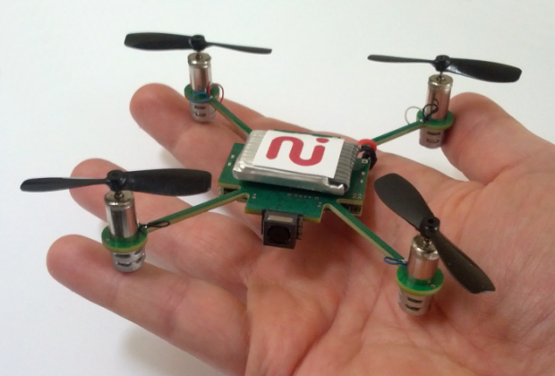
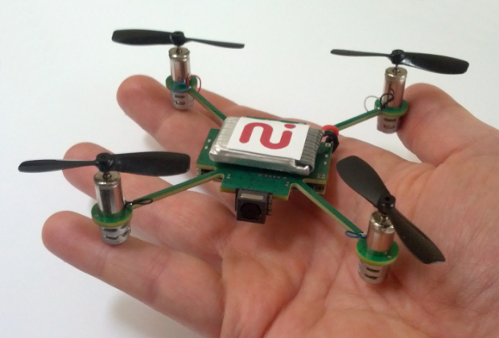

Citizen science y Smart cities
los futuros IDE

El internet de las cosas
 



Caso real: Cobweb

Caso real: Cobweb

Retos
- Catálogos de metadatos adaptados
- Interpretación de datos
- Quality Assurance
- Protección de datos y Restricciones de seguridad
- Plataforma muy compleja para el usuario
Y eso es todo
¿Dudas, preguntas, sugerencias, críticas destructivas?